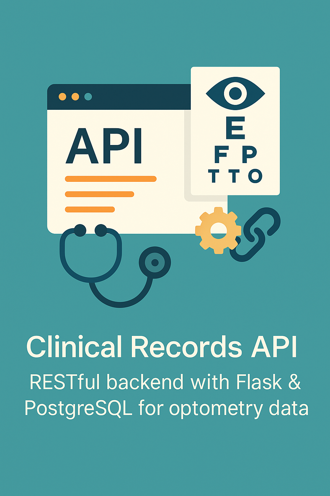

BV Toolkit
A Flutter mobile application for optometrists and vision therapists to perform binocular vision assessments, record patient test sessions, and generate clinical interpretations at the point of care.
- Patient profiles, session timelines, and visit notes
- Phoria, vergence, NPC, Sheard's, Percival's, and diagnostic modules
- Local multi-user support with secure credential storage